|
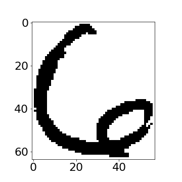
|
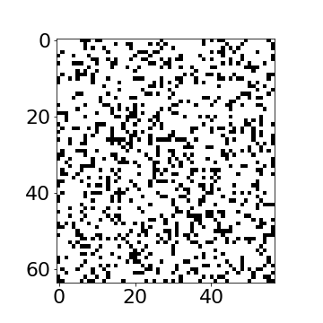
|
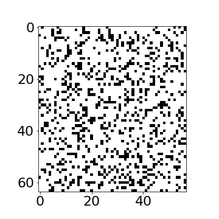
|

Figure: Even if we sample every nano second from now until the end of the universe we won’t see the original six again.
First we download some libraries and files to support the notebook.
urllib.request.urlretrieve('https://raw.githubusercontent.com/lawrennd/talks/gh-pages/mlai.py','mlai.py')urllib.request.urlretrieve('https://raw.githubusercontent.com/lawrennd/talks/gh-pages/teaching_plots.py','teaching_plots.py')urllib.request.urlretrieve('https://raw.githubusercontent.com/lawrennd/talks/gh-pages/gp_tutorial.py','gp_tutorial.py')[edit]
In Sheffield we created a suite of software tools for ‘Open Data Science’. Open data science is an approach to sharing code, models and data that should make it easier for companies, health professionals and scientists to gain access to data science techniques.
You can also check this blog post on Open Data Science.
The software can be installed using
from the command prompt where you can access your python installation.
The code is also available on github: https://github.com/sods/ods
Once pods is installed, it can be imported in the usual manner.
[edit]
To introduce high dimensional data, we will first of all introduce a hand written digit from the U.S. Postal Service handwritten digit data set (originally collected from scanning enveolopes) and used in the first convolutional neural network paper (Le Cun et al., 1989).
Le Cun et al. (1989) downscaled the images to \(16 \times 16\), here we use an image at the original scale, containing 64 rows and 57 columns. Since the pixels are binary, and the number of dimensions is 3,648, this space contains \(2^{3,648}\) possible images. So this space contains a lot more than just one digit.
If we sample from this space, taking each pixel independently from a probability which is given by the number of pixels which are ‘on’ in the original image, over the total number of pixels, we see images that look nothing like the original digit.
|
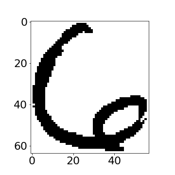
|
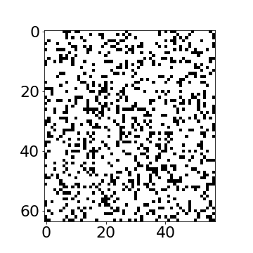
|
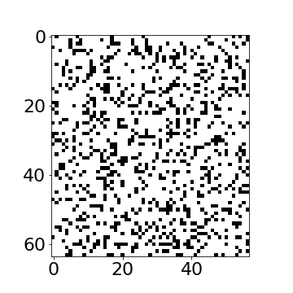
|
Figure: Even if we sample every nano second from now until the end of the universe we won’t see the original six again.
Even if we sample every nanosecond from now until the end of the universe you won’t see the original six again.
So, an independent pixel model for this digit doesn’t seem sensible. The total space is enormous, and yet the space occupied by the type of data we’re interested in is relatively small.
Consider a different type of model. One where we take a prototype six and we rotate it left and right to create new data.
six_image = mlai.load_pgm('br1561_6.3.pgm', directory ='../slides/diagrams/dimred')
six_image = np.hstack([np.zeros((rows, 3)), six_image, np.zeros((rows, 4))])
dim_one = np.asarray(six_image.shape)
angles = range(360)
i = 0
Y = np.zeros((len(angles), np.prod(dim_one)))
for angle in angles:
rot_image = rotate(six_image, angle, mode='nearest')
dim_two = np.asarray(rot_image.shape)
start = [int(round((dim_two[0] - dim_one[0])/2)), int(round((dim_two[1] - dim_one[1])/2))]
crop_image = rot_image[start[0]+np.array(range(dim_one[0])), :][:, start[1]+np.array(range(dim_one[1]))]
Y[i, :] = crop_image.flatten()|
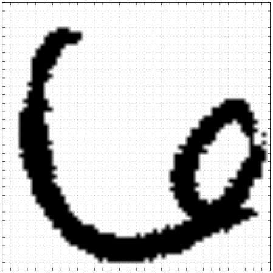
|
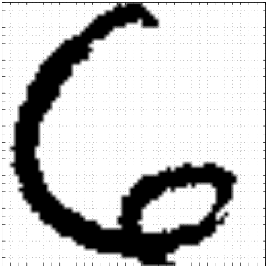
|
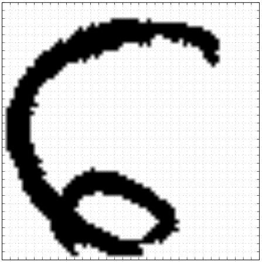
|
Figure: Rotate a prototype six to form a set of plausible sixes.
|
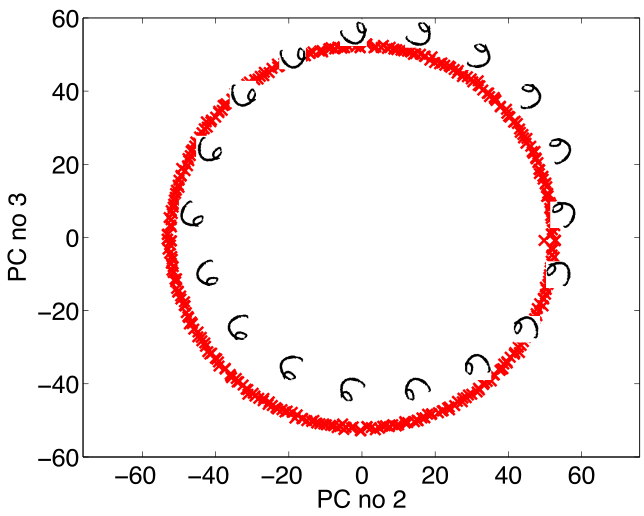
|
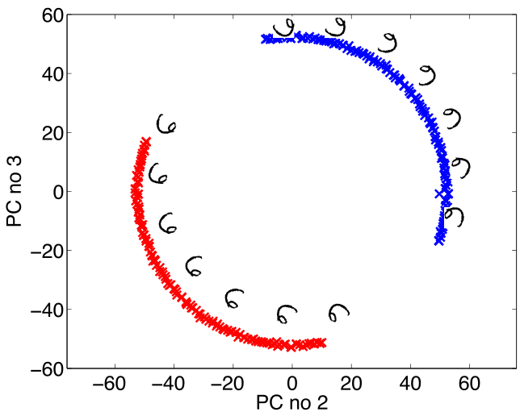
|
Figure: The rotated sixes projected onto the first two principal components of the ‘rotated data set’. The data lives on a one dimensional manifold in the 3,648 dimensional space.
Of course, in practice pure rotation of the image is too simple a model. Digits can undergo several distortions and retain their nature. For example, they can be scaled, they can go through translation, they can udnergo ‘thinning’. But, for data with ‘structure’ we expect fewer of these distortions than the dimension of the data. This means we expect data to live on a lower dimensonal manifold. This implies that we should deal with high dimensional data by looking for a lower dimensional (non-linear) embedding.
[edit]
Dimensionality reduction methods compress the data by replacing the original data with a reduced number of continuous variables. One way of thinking of these methods is to imagine a marionette.
Figure: Thinking of dimensionality reduction as a marionette. We observe the high dimensional pose of the puppet, \(\mathbf{ x}\), but the movement of the puppeteer’s hand, \(\mathbf{ z}\) remains hidden to us. Dimensionality reduction aims to recover those hidden movements which generated the observations.
The position of each body part of a marionette could be thought of as our data, \(\mathbf{ x}_i\). So, each data point consists of the 3-D co-ordinates of all the different body parts of the marionette. Let’s say there are 13 different body parts (2 each of feet, knees, hips, hands, elbows, shoulders, one head). Each body part has an x, y, z position in Cartesian coordinates. So that’s 39 numbers associated with each observation.
The movement of these 39 parts is determined by the puppeteer via strings. Let’s assume it’s a very simple puppet, with just one stick to control it. The puppeteer can move the stick up and down, left and right. And they can twist it. This gives three parameters in the puppeteers control. This implies that the 39 variables we see moving are controlled by only 3 variables. These 3 variables are often called the hidden or latent variables.
Dimensionality reduction assumes something similar for real world data. It assumes that the data we observe is generated from some lower dimensional underlying process. It then seeks to recover the values associated with this low dimensional process.
Dimensionality reduction techniques underpin a lot of psychological scoring tests such as IQ tests or personality tests. An IQ test can involve several hundred questions, potentially giving a rich, high dimensional, characterization of some aspects of your intelligence. It is then summarized by a single number. Similarly, the Myers-Briggs personality test involves answering questions about preferences which are reduced to a set of numbers reflecting personality.
These tests are assuming that our intelligence is implicitly one-dimensional and that our personality is implicitly four dimensional. Other examples include political belief which is typically represented on a left to right scale. A one-dimensional distillation of an entire philosophy about how a country should be run. Our own leadership principles imply that our decisions have a fourteen-dimensional space underlying them. Each decision could be characterized by judging to what extent it embodies each of the principles.
Political belief, personality, intelligence, leadership. None of these exist as a directly measurable quantity in the real world, rather they are inferred based on measurables. Dimensionality reduction is the process of allowing the computer to automatically find such underlying dimensions. This automatically allowing us to characterize each data point according to those explanatory variables. Each of these characteristics can be scored, and individuals can then be turned into vectors.
This doesn’t only apply to individuals, in recent years work on language modeling has taken a similar approach to words. The word2vec algorithm performed a dimensionality reduction on words, now you can take any word and map it to a latent space where similar words exhibit similar characteristics. A ‘personality space’ for words.
We will return to non-linear dimensionality reduction approaches shortly, but first we’re going to consider linear approaches to dimensionality reduction. To do so, we’ll first review some characteristics of the Gaussian density.
[edit]
The Gaussian density has many important properties, but for the moment we’ll review two of them.
If we assume that a variable, \(y_i\), is sampled from a Gaussian density,
\[y_i \sim \mathcal{N}\left(\mu_i,\sigma_i^2\right)\]
Then we can show that the sum of a set of variables, each drawn independently from such a density is also distributed as Gaussian. The mean of the resulting density is the sum of the means, and the variance is the sum of the variances,
\[ \sum_{i=1}^{n} y_i \sim \mathcal{N}\left(\sum_{i=1}^n\mu_i,\sum_{i=1}^n\sigma_i^2\right) \]
Since we are very familiar with the Gaussian density and its properties, it is not immediately apparent how unusual this is. Most random variables, when you add them together, change the family of density they are drawn from. For example, the Gaussian is exceptional in this regard. Indeed, other random variables, if they are independently drawn and summed together tend to a Gaussian density. That is the central limit theorem which is a major justification for the use of a Gaussian density.
Less unusual is the scaling property of a Gaussian density. If a variable, \(y\), is sampled from a Gaussian density,
\[y\sim \mathcal{N}\left(\mu,\sigma^2\right)\] and we choose to scale that variable by a deterministic value, \(w\), then the scaled variable is distributed as
\[wy\sim \mathcal{N}\left(w\mu,w^2 \sigma^2\right).\] Unlike the summing properties, where adding two or more random variables independently sampled from a family of densitites typically brings the summed variable outside that family, scaling many densities leaves the distribution of that variable in the same family of densities. Indeed, many densities include a scale parameter (e.g. the Gamma density) which is purely for this purpose. In the Gaussian the standard deviation, \(\sigma\), is the scale parameter. To see why this makes sense, let’s consider, \[z \sim \mathcal{N}\left(0,1\right),\] then if we scale by \(\sigma\) so we have, \(y=\sigma z\), we can write, \[y=\sigma z \sim \mathcal{N}\left(0,\sigma^2\right)\]
Let’s first of all review the properties of the multivariate Gaussian distribution that make linear Gaussian models easier to deal with. We’ll return to the, perhaps surprising, result on the parameters within the nonlinearity, \(\boldsymbol{ \theta}\), shortly.
To work with linear Gaussian models, to find the marginal likelihood all you need to know is the following rules. If \[ \mathbf{ y}= \mathbf{W}\mathbf{ x}+ \boldsymbol{ \epsilon}, \] where \(\mathbf{ y}\), \(\mathbf{ x}\) and \(\boldsymbol{ \epsilon}\) are vectors and we assume that \(\mathbf{ x}\) and \(\boldsymbol{ \epsilon}\) are drawn from multivariate Gaussians, \[ \begin{align} \mathbf{ x}& \sim \mathcal{N}\left(\boldsymbol{ \mu},\mathbf{C}\right)\\ \boldsymbol{ \epsilon}& \sim \mathcal{N}\left(\mathbf{0},\boldsymbol{ \Sigma}\right) \end{align} \] then we know that \(\mathbf{ y}\) is also drawn from a multivariate Gaussian with, \[ \mathbf{ y}\sim \mathcal{N}\left(\mathbf{W}\boldsymbol{ \mu},\mathbf{W}\mathbf{C}\mathbf{W}^\top + \boldsymbol{ \Sigma}\right). \]
With appropriately defined covariance, \(\boldsymbol{ \Sigma}\), this is actually the marginal likelihood for Factor Analysis, or Probabilistic Principal Component Analysis (Tipping and Bishop, 1999), because we integrated out the inputs (or latent variables they would be called in that case).
[edit]
Latent means hidden, and hidden variables are simply unobservable variables. The idea of a latent variable is crucial to the concept of artificial intelligence, machine learning and experimental design. A latent variable could take many forms. We might observe a man walking along a road with a large bag of clothes and we might infer that the man is walking to the laundrette. Our observations are a highly complex data space, the response in our eyes is processed through our visual cortex, the combination of the individual’s limb movememnts and the direction they are walking in all conflate in our heads to cause us to infer that (perhaps) the individual is going to the laundrette. We don’t know that the man is walking to the laundrette, but we have a model of the world that suggests that it’s a likely outcome for the very complex data. In some ways the latent variable can be seen as a compression of this very complex scene. If I were writing a book, I might write that “A man tripped over whilst walking to the laundrette”. In the reader’s mind an image of a man, perhaps laden with dirty clothes, may occur. All these ideas come from our expectations of the world around us. We can make further inference about the man, some of it perhaps plausible others less so. The man may be going to the laundrette because his washing machine is broken, or because he doesn’t have a large enough flat to have a washing machine, or because he’s carrying a duvet, or because he doesn’t like ironing. All of these may increase in probability given our observation, but they are still latent variables. Unless we follow the man back to his appartment, or start making other enquirires about the man, we don’t know the true answer.
It’s clear that to do inference about any complex system we must include latent variables. Latent variables are extremely powerful. In robotics, they are used to represent the state of the robot. The state of the robot may include its position (in x, y coordinates) its speed, its direction of facing. How are these variables unknown to the robot? Well the robot only posesses sensors, it can make observations of the nearest object in a certain direction, and it may have a map of its environment. If we represent the state of the robot as its position on a map, it may be uncertain of that position. If you go walking or running in the hills around Sheffield, you can take a very high quality ordnance survey map with you. However, unless you are a really excellent orienteer, when you are far from any given landmark, you will probably be uncertain about your true position on the map. These states are also latent variables.
In statistical analysis of experiments you try to control for each aspect of the experiment, in particular by randomization. So if I’m interested in the ability of a particular fertilizer to improve the yield of a particular plant I may design an experiment where I apply the fertilizer to some plants (the treatment group) and withold the fertilizer from others (the control group). I then test to see whether the yield from the treatment group is better (or worse) than the control group. I may find that I have an excellent yield for the treatment group. However, what if I’d (unknowlingly) planted all my treatment plants in a sunny part of the field, and all the control plants in a shady part of the field. That would also be a latent variable, in this case known as a confounder. In statistical experimental design randomization is used to attempt to eliminate the correlated effects of these confounders: you aim to ensure that if these confounders do exist their effects are not correlated with treatment and contorl. This is known as a randomized control trial.
Greek philosophers worried a great deal about what was knowable and what was unknowable. Adherents of philosophical Skeptisism were inspired by the idea that since your senses sometimes give you contradictory information, they cannot be trusted, and in extreme cases they chose to ignore their senses. This is an acknowledgement that very often the true state of the world cannot be known with precision. Unfortunately, these philosophers didn’t have a good understanding of probability, so they were unable to encapsulate their ideas through a degree of belief.
We often use language to express the compression of a complex behavior or patterns in a simpler way, for example we talk about motives as a useful distallation for a perhaps very complex patter of behavior. In physics we use principles of causation and simple laws to describe the world around us. Such motives or underlying principles are difficult to observe directly, our conclusions about them emerge over a period of time by observing indirect consequences of the latent variables.
Epistemic uncertainty allows us to deal with these worries by associating our degree of belief about the state of the world with a probaiblity distribution. This core idea underpins state space modelling, probabilistic graphical models and the wider field of latent variable modelling. In this session we are going to explore the idea in a simple linear system and see how it relates to factor analysis and principal component analysis.
At the beginning of the 20th century there was a great deal of interest amoungst psychologists in formalizing patterns of thought. The approach they used became known as factor analysis. The principle is that we observe a potentially high dimensional vector of characteristics about an individual. To formalize this, social scientists designed questionaires. We can envisage many questions that we may ask, but the assumption is that underlying these questions there are only a few traits that dictate the behavior. These models are known as latent trait models and the analysis is sometimes known as factor analysis. The idea is that there are a few characteristic traits that we are looking to discern. These traits or factors can be extracted by assimilating the high dimensional characteristics of the individual into a few latent factors.
This causes us to consider a model as follows, if we are given a high dimensional vector of features (perhaps questionaire answers) associated with an individual, \(\mathbf{ y}\), we assume that these factors are actually generated from a low dimensional vector latent traits, or latent variables, which determine the personality. \[ \mathbf{ y}= \mathbf{f}(\mathbf{ z}) + \boldsymbol{ \epsilon}, \] where \(\mathbf{f}(\mathbf{ z})\) is a vector valued function that is dependent on the latent traits and \(\boldsymbol{ \epsilon}\) is some corrupting noise. For simplicity, we assume that the function is given by a linear relationship, \[ \mathbf{f}(\mathbf{ z}) = \mathbf{W}\mathbf{ z} \] where we have introduced a matrix \(\mathbf{W}\) that is sometimes referred to as the factor loadings but we also immediately see is related to our multivariate linear regression models from the . That is because our vector valued function is of the form
\[ \mathbf{f}(\mathbf{ z}) = \begin{bmatrix} f_1(\mathbf{ z}) \\ f_2(\mathbf{ z}) \\ \vdots \\ f_p(\mathbf{ z})\end{bmatrix} \] where there are \(p\) features associated with the individual. If we consider any of these functions individually we have a prediction function that looks like a regression model, \[ f_j(\mathbf{ z}) = \mathbf{ w}_{j, :}^\top \mathbf{ z}, \] for each element of the vector valued function, where \(\mathbf{ w}_{:, j}\) is the \(j\)th column of the matrix \(\mathbf{W}\). In that context each column of \(\mathbf{W}\) is a vector of regression weights. This is a multiple input and multiple output regression. Our inputs (or covariates) have dimensionality greater than 1 and our outputs (or response variables) also have dimensionality greater than one. Just as in a standard regression, we are assuming that we don’t observe the function directly (note that this also makes the function a type of latent variable), but we observe some corrupted variant of the function, where the corruption is given by \(\boldsymbol{ \epsilon}\). Just as in linear regression we can assume that this corruption is given by Gaussian noise, where the noise for the \(j\)th element of \(\mathbf{ y}\) is by, \[ \epsilon_j \sim \mathcal{N}\left(0,\sigma^2_j\right). \] Of course, just as in a regression problem we also need to make an assumption across the individual data points to form our full likelihood. Our data set now consists of many observations of \(\mathbf{ y}\) for diffetent individuals. We store these observations in a design matrix, \(\mathbf{Y}\), where each row of \(\mathbf{Y}\) contains the observation for one individual. To emphasize that \(\mathbf{ y}\) is a vector derived from a row of \(\mathbf{Y}\) we represent the observation of the features associated with the \(i\)th individual by \(\mathbf{ y}_{i, :}\), and place each individual in our data matrix,
\[ \mathbf{Y} = \begin{bmatrix} \mathbf{ y}_{1, :}^\top \\ \mathbf{ y}_{2, :}^\top \\ \vdots \\ \mathbf{ y}_{n, :}^\top\end{bmatrix}, \] where we have \(n\) data points. Our data matrix therefore has \(n\) rows and \(p\) columns. The point to notice here is that each data obsesrvation appears as a row vector in the design matrix (thus the transpose operation inside the brackets). Our prediction functions are now actually a matrix value function, \[ \mathbf{F} = \mathbf{Z}\mathbf{W}^\top, \] where for each matrix the data points are in the rows and the data features are in the columns. This implies that if we have \(q\) inputs to the function we have \(\mathbf{F}\in \Re^{n\times p}\), \(\mathbf{W}\in \Re^{p \times q}\) and \(\mathbf{Z}\in \Re^{n\times q}\).
Show that, given all the definitions above, if, \[ \mathbf{F} = \mathbf{Z}\mathbf{W}^\top \] and the elements of the vector valued function \(\mathbf{F}\) are given by \[ f_{i, j} = f_j(\mathbf{ z}_{i, :}), \] where \(\mathbf{ z}_{i, :}\) is the \(i\)th row of the latent variables, \(\mathbf{Z}\), then show that \[ f_j(\mathbf{ z}_{i, :}) = \mathbf{ w}_{j, :}^\top \mathbf{ z}_{i, :} \]
The difference between this model and a multiple output regression is that in the regression case we are provided with the covariates \(\mathbf{Z}\), here they are latent variables. These variables are unknown. Just as we have done in the past for unknowns, we now treat them with a probability distribution. In factor analysis we assume that the latent variables have a Gaussian density which is independent across both across the latent variables associated with the different data points, and across those associated with different data features, so we have, \[ x_{i,j} \sim \mathcal{N}\left(0,1\right), \] and we can write the density governing the latent variable associated with a single point as, \[ \mathbf{ z}_{i, :} \sim \mathcal{N}\left(\mathbf{0},\mathbf{I}\right). \] If we consider the values of the function for the \(i\)th data point as \[ \mathbf{f}_{i, :} = \mathbf{f}(\mathbf{ z}_{i, :}) = \mathbf{W}\mathbf{ z}_{i, :} \] then we can use the rules for multivariate Gaussian relationships to write that \[ \mathbf{f}_{i, :} \sim \mathcal{N}\left(\mathbf{0},\mathbf{W}\mathbf{W}^\top\right) \] which implies that the distribution for \(\mathbf{ y}_{i, :}\) is given by \[ \mathbf{ y}_{i, :} = \sim \mathcal{N}\left(\mathbf{0},\mathbf{W}\mathbf{W}^\top + \boldsymbol{\Sigma}\right) \] where \(\boldsymbol{\Sigma}\) the covariance of the noise variable, \(\epsilon_{i, :}\) which for factor analysis is a diagonal matrix (because we have assumed that the noise was independent across the features), \[ \boldsymbol{\Sigma} = \begin{bmatrix}\sigma^2_{1} & 0 & 0 & 0\\ 0 & \sigma^2_{2} & 0 & 0\\ 0 & 0 & \ddots & 0\\ 0 & 0 & 0 & \sigma^2_p\end{bmatrix}. \] For completeness, we could also add in a mean for the data vector \(\boldsymbol{ \mu}\), \[ \mathbf{ y}_{i, :} = \mathbf{W}\mathbf{ z}_{i, :} + \boldsymbol{ \mu}+ \boldsymbol{ \epsilon}_{i, :} \] which would give our marginal distribution for \(\mathbf{ y}_{i, :}\) a mean \(\boldsymbol{ \mu}\). However, the maximum likelihood solution for \(\boldsymbol{ \mu}\) turns out to equal the empirical mean of the data, \[ \boldsymbol{ \mu}= \frac{1}{n} \sum_{i=1}^n \mathbf{ y}_{i, :}, \] regardless of the form of the covariance, \(\mathbf{C}= \mathbf{W}\mathbf{W}^\top + \boldsymbol{\Sigma}\). As a result it is very common to simply preprocess the data and ensure it is zero mean. We will follow that convention for this session.
The prior density over latent variables is independent, and the likelihood is independent, that means that the marginal likelihood here is also independent over the data points. Factor analysis was developed mainly in psychology and the social sciences for understanding personality and intelligence. Charles Spearman was concerned with the measurements of “the abilities of man” and is credited with the earliest version of factor analysis.
In 1933 Harold Hotelling published on principal component analysis the first mention of this approach (Hotelling, 1933). Hotelling’s inspiration was to provide mathematical foundation for factor analysis methods that were by then widely used within psychology and the social sciences. His model was a factor analysis model, but he considered the noiseless ‘limit’ of the model. In other words he took \(\sigma^2_i \rightarrow 0\) so that he had
\[ \mathbf{ y}_{i, :} \sim \lim_{\sigma^2 \rightarrow 0} \mathcal{N}\left(\mathbf{0},\mathbf{W}\mathbf{W}^\top + \sigma^2 \mathbf{I}\right). \] The paper had two unfortunate effects. Firstly, the resulting model is no longer valid probablistically, because the covariance of this Gaussian is ‘degenerate’. Because \(\mathbf{W}\mathbf{W}^\top\) has rank of at most \(q\) where \(q<p\) (due to the dimensionality reduction) the determinant of the covariance is zero, meaning the inverse doesn’t exist so the density, \[ p(\mathbf{ y}_{i, :}|\mathbf{W}) = \lim_{\sigma^2 \rightarrow 0} \frac{1}{(2\pi)^\frac{p}{2} |\mathbf{W}\mathbf{W}^\top + \sigma^2 \mathbf{I}|^{\frac{1}{2}}} \exp\left(-\frac{1}{2}\mathbf{ y}_{i, :}\left[\mathbf{W}\mathbf{W}^\top+ \sigma^2 \mathbf{I}\right]^{-1}\mathbf{ y}_{i, :}\right), \] is not valid for \(q<p\) (where \(\mathbf{W}\in \Re^{p\times q}\)). This mathematical consequence is a probability density which has no ‘support’ in large regions of the space for \(\mathbf{ y}_{i, :}\). There are regions for which the probability of \(\mathbf{ y}_{i, :}\) is zero. These are any regions that lie off the hyperplane defined by mapping from \(\mathbf{ z}\) to \(\mathbf{ y}\) with the matrix \(\mathbf{W}\). In factor analysis the noise corruption, \(\boldsymbol{ \epsilon}\), allows for points to be found away from the hyperplane. In Hotelling’s PCA the noise variance is zero, so there is only support for points that fall precisely on the hyperplane. Secondly, Hotelling explicity chose to rename factor analysis as principal component analysis, arguing that the factors social scientist sought were different in nature to the concept of a mathematical factor. This was unfortunate because the factor loadings, \(\mathbf{W}\) can also be seen as factors in the mathematical sense because the model Hotelling defined is a Gaussian model with covariance given by \(\mathbf{C}= \mathbf{W}\mathbf{W}^\top\) so \(\mathbf{W}\) is a factor of the covariance in the mathematical sense, as well as a factor loading.
However, the paper had one great advantage over standard approaches to factor analysis. Despite the fact that the model was a special case that is subsumed by the more general approach of factor analysis it is this special case that leads to a particular algorithm, namely that the factor loadings (or principal components as Hotelling referred to them) are given by an eigenvalue decomposition of the empirical covariance matrix.
\[ \mathbf{ y}_{i,:}=\mathbf{W}\mathbf{ z}_{i,:}+\boldsymbol{ \epsilon}_{i,:},\quad \mathbf{ z}_{i,:} \sim \mathcal{N}\left(\mathbf{0},\mathbf{I}\right), \quad \boldsymbol{ \epsilon}_{i,:} \sim \mathcal{N}\left(\mathbf{0},\sigma^{2}\mathbf{I}\right) \]
\[ \mathbf{W}\mathbf{ z}_{i,:} \sim \mathcal{N}\left(\mathbf{0},\mathbf{W}\mathbf{W}^\top\right) \]
\[ \mathbf{W}\mathbf{ z}_{i, :} + \boldsymbol{ \epsilon}_{i, :} \sim \mathcal{N}\left(\mathbf{0},\mathbf{W}\mathbf{W}^\top + \sigma^2 \mathbf{I}\right) \]
Probabilistic PCA Max. Likelihood Soln (Tipping and Bishop (1999))

Figure: Graphical model representing probabilistic PCA.
\[p\left(\mathbf{Y}|\mathbf{W}\right)=\prod_{i=1}^{n}\mathcal{N}\left(\mathbf{ y}_{i, :}|\mathbf{0},\mathbf{W}\mathbf{W}^{\top}+\sigma^{2}\mathbf{I}\right)\]
Eigenvalue problems are widespreads in physics and mathematics, they are often written as a matrix/vector equation but we prefer to write them as a full matrix equation. In an eigenvalue problem you are looking to find a matrix of eigenvectors, \(\mathbf{U}\) and a diagonal matrix of eigenvalues, \(\boldsymbol{\Lambda}\) that satisfy the matrix equation \[ \mathbf{A}\mathbf{U} = \mathbf{U}\boldsymbol{\Lambda}. \] where \(\mathbf{A}\) is your matrix of interest. This equation is not trivially solvable through matrix inverse because matrix multiplication is not commutative, so premultiplying by \(\mathbf{U}^{-1}\) gives \[ \mathbf{U}^{-1}\mathbf{A}\mathbf{U} = \boldsymbol{\Lambda}, \] where we remember that \(\boldsymbol{\Lambda}\) is a diagonal matrix, so the eigenvectors can be used to diagonalise the matrix. When performing the eigendecomposition on a Gaussian covariances, diagonalisation is very important because it returns the covariance to a form where there is no correlation between points.
We are interested in the case where \(\mathbf{A}\) is a covariance matrix, which implies it is positive definite. A positive definite matrix is one for which the inner product, \[ \mathbf{ w}^\top \mathbf{C}\mathbf{ w} \] is positive for all values of the vector \(\mathbf{ w}\) other than the zero vector. One way of creating a positive definite matrix is to assume that the symmetric and positive definite matrix \(\mathbf{C}\in \Re^{p\times p}\) is factorised into, \(\mathbf{A}in \Re^{p\times p}\), a full rank matrix, so that \[ \mathbf{C}= \mathbf{A}^\top \mathbf{A}. \] This ensures that \(\mathbf{C}\) must be positive definite because \[ \mathbf{ w}^\top \mathbf{C}\mathbf{ w}=\mathbf{ w}^\top \mathbf{A}^\top\mathbf{A}\mathbf{ w} \] and if we now define a new vector \(\mathbf{b}\) as \[ \mathbf{b} = \mathbf{A}\mathbf{ w} \] we can now rewrite as \[ \mathbf{ w}^\top \mathbf{C}\mathbf{ w}= \mathbf{b}^\top\mathbf{b} = \sum_{i} b_i^2 \] which, since it is a sum of squares, is positive or zero. The constraint that \(\mathbf{A}\) must be full rank ensures that there is no vector \(\mathbf{ w}\), other than the zero vector, which causes the vector \(\mathbf{b}\) to be all zeros.
If \(\mathbf{C}=\mathbf{A}^\top \mathbf{A}\) then express \(c_{i,j}\), the value of the element at the \(i\)th row and the \(j\)th column of \(\mathbf{C}\), in terms of the columns of \(\mathbf{A}\). Use this to show that (i) the matrix is symmetric and (ii) the matrix has positive elements along its diagonal.
Symmetric matrices have orthonormal eigenvectors. This means that \(\mathbf{U}\) is an orthogonal matrix, \(\mathbf{U}^\top\mathbf{U} = \mathbf{I}\). This implies that \(\mathbf{u}_{:, i} ^\top \mathbf{u}_{:, j}\) is equal to 0 if \(i\neq j\) and 1 if \(i=j\).
For more information on these subjects and more you might want to check the following resources.
Hotelling, H., 1933. Analysis of a complex of statistical variables into principal components. Journal of Educational Psychology 24, 417–441.
Le Cun, Y., Boser, B.E., Denker, J.S., Henderson, D., Howard, R.E., Hubbard, W., Jackel, L.D., 1989. Backpropagation applied to handwritten zip code recognition. Neural Computation 1, 541–551. https://doi.org/10.1162/neco.1989.1.4.541
Tipping, M.E., Bishop, C.M., 1999. Probabilistic principal component analysis. Journal of the Royal Statistical Society, B 6, 611–622. https://doi.org/doi:10.1111/1467-9868.00196